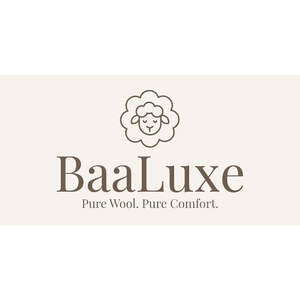

Trade Mark Journal No.2026/007 13 February 2026
UK00004321944 9 January 2026 (3,21,22,25)

- Class 3
- Essential oils for household use; Essential oils as fragrances for laundry use; Aromatherapy preparations; Household fragrances; Room fragrances; Reed diffusers; Fragrance refills for non-electric room fragrance dispensers; Sachets for perfuming linen; Fragrance sachets; Scented linen sprays; Scented fabric refresher sprays; Pot pourri; Laundry balls containing laundry detergent; Colour run prevention laundry sheets; Laundry preparations.
- Class 21
- Tumble drier balls [household utensils]; Laundry balls for use as household utensils; Laundry baskets for household purposes; Laundry bins for household purposes; Laundry sorters for household use; Clothes drying racks; Clothes drying hangers; Clothes airers [clothes horse]; Frames for drying and maintaining the shape of clothing items; Articles for the care of clothing and footwear; Lint removers, electric or non-electric; Aromatic oil diffusers, other than reed diffusers, electric and non-electric; Essential oil burners; Plates for diffusing aromatic oil; Potpourri dishes; Containers for pot pourri; Tealight burners; Glass bottles; Bottles, sold empty; Perfume bottles sold empty; Empty spray bottles; Household containers.
- Class 22
- Padding and stuffing materials (except of rubber or plastics); Stuffing, not of rubber, plastics, paper or cardboard; Bags for storage purposes; Cloth bags for storage; Bags [envelopes, pouches] of textile, for packaging; Pouches of textile for packaging; Laundry bags; Mesh bags for washing laundry; Fabric gift bags; Natural fibers; Cotton fibres; Hemp fibres; Jute; Textile fibres, all the aforesaid goods made using or containing wool; Wool [raw material]; Carded wool; Scoured wool.
- Class 25
- Knitted clothing; Knitwear; Knitted gloves; Knitted caps; Linen clothing; Tshirts; Tops [clothing]; Hooded pullovers; Cardigans; Sweaters; Loungewear; Socks; Scarfs; Shawls; Aprons [clothing]; Clothing for men, women and children; Ready-to-wear clothing, all the aforesaid goods made using or containing wool; Woollen sweaters; Woollen socks.
Amiee El Khoury
Representative: Trama Legal s.r.o.